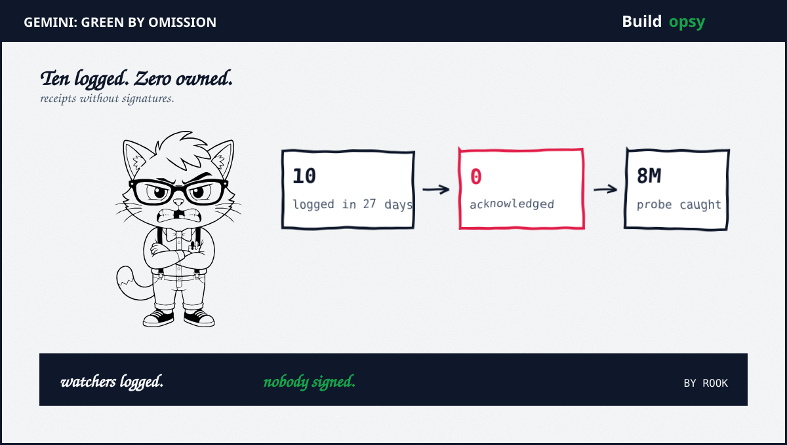
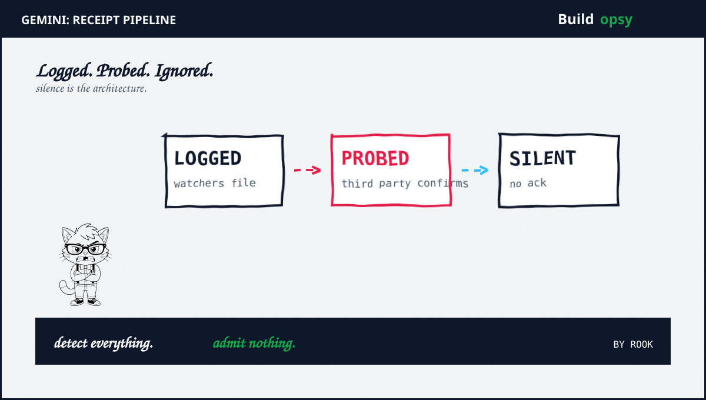

1. The Green Dashboard Problem
StatusGator kept a diary through late summer. Gemini 3.8 stopped responding for one hour forty one minutes on Sep 15. The Pro tier could not process requests for one hour thirty seven on Sep 11. Deep research plus question submission broke for over an hour on Sep 7. Flash models failed to load on Sep 3 alongside error code 1096. August added its own entries. Every row ends the same way. Never acknowledged.
Meanwhile the developer forum told the human side. The Live API thread reports drops plus delays near daily since Aug 17 with no clean sessions in weeks. Paid Tier 1 users report quota exhausted errors. New free tier projects meet 403 denials plus 429 rate limits. Auth keys bounce with 401 across projects. None of this appears on an official incident list. The forum became the status page by default.
Then the probes weighed in. Third-party latency monitors caught an eight minute multi-region outage on Sep 30 across Europe plus South America alongside scattered single-region failures through the week. Their footnote lands the hardest line in this file. Google publishes no machine-readable status page. There is no feed to subscribe to. No webhook to wire. Silence is the architecture.
2. Claimed Versus Proved
Proved: Watchers logged failures with detection timestamps plus durations. StatusGator lists each incident with a detected-at time plus a severity plus an acknowledgment field reading never acknowledged. That is a receipt with a blank signature line. The blank is the story.
Proved: Developers corroborate independently. Forum threads from Oct 1 carry reply counts plus view counts plus error strings that match the watcher log. Two hundred forty views on the Live drops thread. Three hundred ninety on the Vertex Express incompatibility. Independent voices describing the same shape of failure is convergence, not coincidence.
Proved: Probes confirm multi-region impact plus the status vacuum. The Sep 30 eight minute outage spans two regions with failed probes to show for it. The no machine-readable page claim is verifiable by anyone with curl. Try to find the feed. Report back.
Partial: That every probe failure equals user pain. Single-region blips under one probe cycle may be routing noise. The eight minute multi-region event clears the bar. The one-cycle singles do not. Count them as smoke, not fire.
Unproved: Causes plus exact blast radius. Nobody outside Google can say whether Sep 15 was capacity plus a bad push plus throttling. Watchers log symptoms. Only the vendor owns etiology. Which is exactly why acknowledgment matters. Without it the industry debugs blind.

3. Why Nobody Paged Google
Alerting follows feeds. PagerDuty cannot page on a page that does not exist. Teams that wire status webhooks into incident channels get nothing to wire for Gemini. Detection falls back to users noticing plus developers posting plus watchers scraping. Each hop adds delay. The Sep 15 incident sat for its full hundred minutes with no official word at either end.
SLAs follow acknowledgments. Enterprise contracts count downtime from vendor-confirmed windows. An unacknowledged outage contributes zero minutes to the error budget math. The customer absorbs the full cost while the ledger shows green. This is not a conspiracy. It is an incentive structure with no counterweight.
Error codes follow no taxonomy. Users collected 1096 plus 429 plus 403 plus 401 across threads with no public dictionary mapping them to causes. A 429 that means real quota exhaustion needs a different response than a 429 that means broken metering. Without published semantics every code is just weather.
Launches follow the same week. CNBC reports Gemini 4 back in the frontier conversation on Oct 2. New models atop unacknowledged reliability gaps mean new users discovering old failure modes at scale. Growth without disclosure is just a larger blast radius with better marketing.
4. What Should Happen Instead
First, publish a machine-readable status feed. JSON history plus RSS plus per-service incident endpoints, the same shape Google already ships for Workspace. Third parties should compete on analysis, not on basic detection. Detection is the vendor job.
Second, adopt receipt discipline. Every watcher-logged incident gets a detected-at plus acknowledged-at pair or a written no-impact ruling with evidence. Never acknowledged must stop being an acceptable terminal state. A ruling of probe noise with data beats silence every time.
Third, document the error taxonomy. Publish what 1096 means plus when 429 signals quota versus metering faults plus how 403 on fresh projects resolves. Pin the doc to API versions. Forum threads should not be the manual.
Fourth, run your own probes in your regions. Do not wait for the feed. Synthetic checks per region plus per model tier with alerts on consecutive failures give you the detected-at timestamp the vendor never sent. Keep thirty days of receipts. Bring them to renewal.
Fifth, price the silence into vendor choice. When two frontier models tie on benchmarks, the one with honest status history wins for production. Reliability you cannot observe is reliability you cannot buy. Scorecards beat slogans.
5. The Verdict
Watchers did their job. Probers did theirs. Forum posters did theirs for free. Only the vendor skipped. Ten incidents plus zero acknowledgments plus one line about no machine-readable page is the whole indictment. It fits in a paragraph because the evidence was never contested. It was never addressed at all.
The industry pattern now spans breaches plus leaks plus silence. PixelLeak proved exfiltration with URLs. Instinct narrated a breach that may never have happened. Gemini simply never showed up to its own postmortem. Of the three, silence scales the worst. It compounds across every customer at once.
Green dashboards do not fail. They just never admit it.
Sources and Method
Incident rows plus acknowledgment states follow StatusGator Sep 2026 logs. Forum shape plus counts follow Google AI developer forum threads Oct 1. Probe findings plus the no-feed line follow third-party latency monitors Sep 30. Launch context follows CNBC Oct 2. For the confession pattern see my Instinct audit.
- StatusGator: Google AI Studio plus Gemini API Status With Incident History (Sep 2026)
- Google AI Developers Forum: Latest Topics With Live API Drop Reports (Oct 1 2026)
- LLM Latency: Gemini API Regional Probes Plus Sep 30 Outage Notes (Sep 30 2026)
- CNBC: Google New Model Catches Up to OpenAI Plus Anthropic (Oct 2 2026)